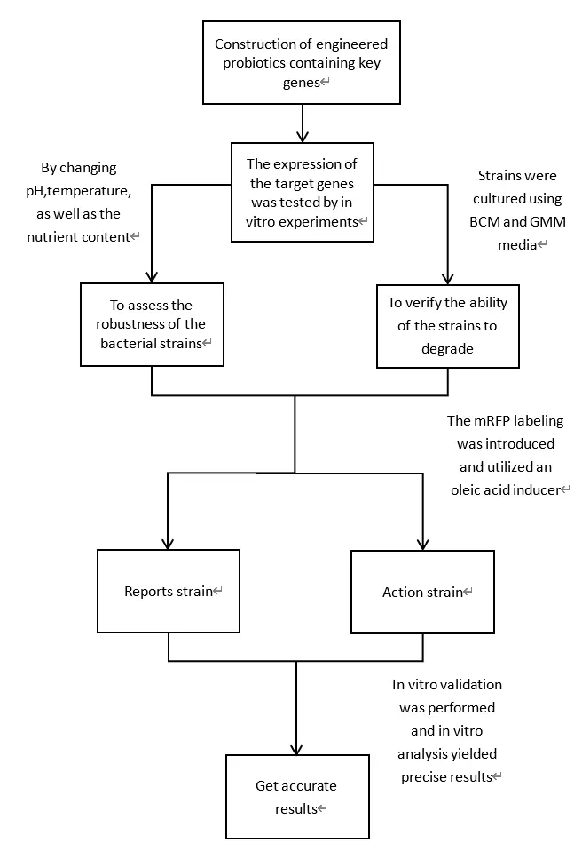
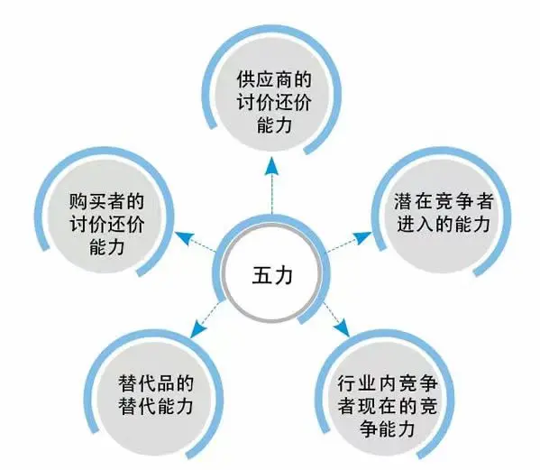
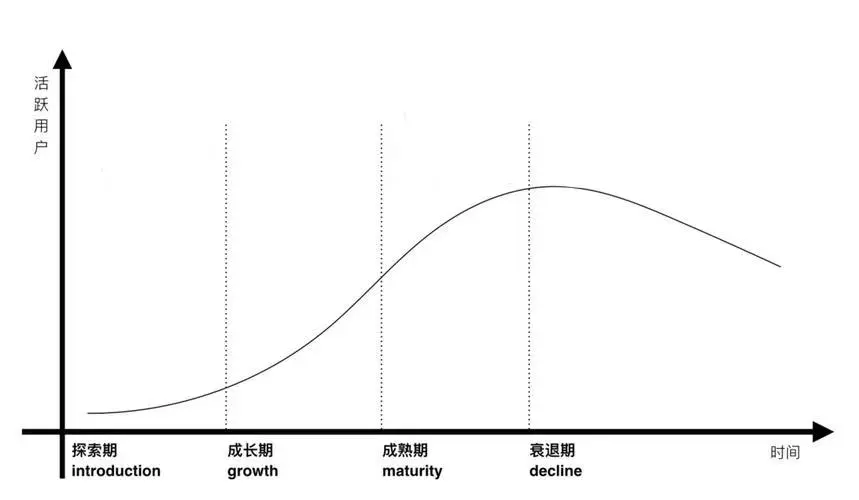
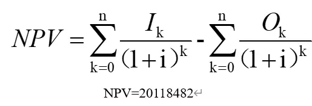

Product development idea: the birth and growth of SugarGuardian.
In the fast-paced modern life, however, the problems in the field of health are gradually emerging, especially the widespread spread of abnormal blood lipids and glycemia in the Chinese population, which has constituted a public health problem that cannot be ignored, and urgently needs us to actively respond with innovative product solutions. With increasing awareness of health, cardiovascular disease has become a major public health issue of global concern. Among them, high cholesterol and high blood sugar is an important risk factor for cardiovascular disease, and its management and control have become the focus of public attention. It is in this context that our team has keenly captured the urgent market need for an innovative product that can effectively help reduce cholesterol, prevent diabetes, and promote cardiovascular health. Thus, the "SugarGuardian" project emerged.
We know that relying on traditional dietary adjustments or medication alone has some effect in lowering cholesterol, but it is often accompanied by many inconveniences and limitations. For example, some drugs may be accompanied by side effects such as liver or kidney damage and hypoglycemia, posing new health risks to patients. Therefore, we put forward the research and development concept of "science and technology integration and health", aiming to develop a healthy probiotic product integrating convenience, efficiency and safety through modern scientific and technological means, to help users easily manage cholesterol and blood sugar levels and enjoy a healthier lifestyle.
After determining the direction of the project, we conducted in-depth market research. Through data analysis, questionnaire survey, expert interview and other methods, we understand that although there are some cholesterol-lowering products in the current market, most of them have problems such as insignificant effect, inconvenient use or large side effects. At the same time, with the upgrading of the concept of health consumption, consumers demand for high-quality and high-tech health products is increasing. This provides a broad market space and unlimited development potential for our project.
Based on the market research results, we have preliminarily conceived a new intestinal engineering bacteria product integrating intelligent monitoring, personalized dietary advice, scientific exercise guidance and natural ingredients assistance.
Metabolic syndrome is a group of interrelated metabolic disorders, including hypertension, insulin resistance, visceral obesity, reduced HDL cholesterol, and elevated triglyceride levels. Numerous clinical studies have shown that the intestinal microbiota is an important pathogenic factor affecting the metabolic syndrome. In 2004, the Jeffrey Gordon team at the University of Washington found that normal microflora mice had 40 percent higher body fat than germ-free mice. Since then, the altered intestinal flora caused by a high-fat diet has led to an increase in the proportion of intestinal bacteria containing lipopolysaccharide (LPS) in the gut, which is associated with an increased risk of hyperglycemia and hyperinsulinemia. However, a healthy intestinal flora is also protective against metabolic disorders. For example, transfer of the fecal flora of healthy individuals to the gut of patients with metabolic syndrome by duodenal catheterization can alter their gut microbiota and improve their insulin sensitivity. And animal studies have shown that certain strains, such as mucin ackermania, can improve diet-induced obesity, fasting blood glucose, and adipose tissue metabolism. Human studies have shown that the gut flora is tightly associated with lipid profiles: individuals with low gene richness are more likely to develop insulin resistance, high triglycerides, and low-density lipoprotein cholesterol levels. Similarly, these individuals were also associated with high serum leptin, high triglycerides, and high free fatty acids, whereas serum adiponectin and high-density lipoprotein cholesterol levels were lower. Intestinal bacterial richness was negatively correlated with BMI and triglyceride levels and positively correlated with HDL. Specific intestinal bacteria such as Clostridiaceae were reported to have an association with lipid levels or BMI. Through the above literature data, we found that the intestinal microflora plays an important role in metabolic disorders. Therefore, we further reviewed the literature to study the way that intestinal microbiota regulates host lipid metabolism. After the study was found that:
On the basis of the above literature, we learned from relevant experts that Insig is a key protein in regulating lipid metabolism, which can bind with the key cholesterol generating protein, SREBP2, to retain it on the endoplasmic reticulum, thus regulating intracellular lipid synthesis. However, the LBK 1 / AMPK axis is able to initiate the Insig upstream signaling pathway, which thus upregulates Insig expression. Butyrate, a short-chain fatty acid secreted by the gut microbiota, targets LBK 1 and phosphorylates AMP-dependent protein kinases to enhance Insig expression. Glucagon-like peptide (GLP-1) is a hormone secreted by intestinal L cells that promotes insulin secretion in the whole body and regulates systemic glucose and lipid metabolism in a glucose concentration-dependent manner. Recent studies suggest that GLP-1 has the potential to act on the LBK 1 / AMPK axis and regulate intracellular adipogenesis.
Based on the literature and the advice of relevant experts, we designed a gut-engineered bacterial product. This product regulates intestinal lipid metabolism by enhancing butyrate synthesis and autocrine GLP-1, thereby by dual targeting of the LBK 1 / AMPK / Insig axis.
This product helps to reduce the risk of cardiovascular disease and improve the quality of life of the patients. For people with diabetes and hypercholesterolemia, this product can not only relieve the disease, but also reduce dietary restrictions, increase the enthusiasm for treatment and promote mental health. For non-diabetic or hypercholesterolemia patients, the product is equally protective against obesity or health promotion.
By understanding the current industry prospects, we have found that:
According to the above market research, it is urgent to study a new economical drug that can better meet the needs of patients. Our product focuses on the dual targeting technology of engineering bacteria, and accurately acts on the LBK 1 / AMPK / Insig axis to regulate intestinal lipid metabolism in an innovative way. By enhancing Insig expression and self-secrete GLP-1, the project achieved a significant reduction in cholesterol level, significant efficacy and frontier method, far beyond the limitations of traditional cholesterol-lowering drugs, not only has high safety, but also immune regulation effect, showing a high degree of innovation and foresight. In addition, the research direction of this project is broad, not only for the treatment of high cholesterol, but also with the potential to expand the treatment of a variety of metabolic diseases, with a large target group and strong market demand, providing valuable new treatment perspectives and strategies, indicating broad application prospects and far-reaching social value. After fully demonstrated the feasibility and market prospects of the project, we contacted the biopharmaceutical company and submitted a detailed project plan. The senior management of the company spoke highly of the project, and decided to fully support the research and development and marketing of the project. Subsequently, the company quickly set up a cross-department RESEARCH and development team, integrating research and development, marketing, sales and other resources, providing a solid guarantee for the smooth implementation of the project.
This product mainly transforms the plasmids expressing the target gene GLP-1 (glucagon-like peptide) and BCoAT (butyyl / hexyl-CoA) into E. coli and selects the intestinal engineering bacteria expressing only BCoAT and double expressing BCoAT and GLP-1, When performing the high-fat and high-sugar diets, The initiation of the upstream Insig signaling pathway and GLP-1 gene expression via the LBK 1 / AMPK axis to promote insulin secretion, respectively, Enable the engineered bacteria to function to reduce lipid and sugar synthesis, It lays the foundation for the wide application of regulating cholesterol and sugar levels through intestinal microbes. Among them, the gene in engineered bacteria, BCoAT, participates in the synthesis and secretion of butyric acid by encoding butyyl / hexanyl-enzyme A, a key protein in the metabolism of short-chain fatty acid. Burate, as a short-chain fatty acid secreted by intestinal microbiota, can target LBK 1 and phosphorylate AMP dependent protein kinase to enhance the expression of Insig, so that the protein Insig binds the key cholesterol ogenic protein SREBP2 to bind it on the endoplasmic reticulum and regulate intracellular lipid synthesis.
This product uses genetic engineering technology to accurately transform plasmids containing the target gene GLP-1 (glucagon-like peptide) and BCoAT (butyyl / hexyl CoA) into Escherichia coli and achieve stable expression. After the screening process, intestinal engineered bacteria expressing only BCoAT and both BCoAT and GLP-1 were developed.
These gut-engineered bacteria play a vital role in consuming high-fat and sugary foods. By activating the Insig upstream signaling pathway, they activate the LBK 1 / AMPK axis, and promote the expression of the GLP-1 gene, which then stimulate insulin secretion. This complex series of biochemical reactions is designed to effectively reduce the synthesis of lipids and sugars, thus maintaining the metabolic balance in the human body.
The BCoAT gene in engineered bacteria encodes a key short-chain fatty acid metabolic protein, —— butyyl / hexanyl-CoA. This protein plays a central role in the synthesis and secretion of butyric acid. Butyrate, a gut bioactive SCFA with unique bioactivity, accurately targets LBK 1 and enhances Insig expression by phosphorylating AMP-dependent protein kinases. With enhanced Insig expression, it is able to bind to SREBP2, a key protein for cholesterol production, thereby retaining it on the endoplasmic reticulum. This process effectively regulates the intracellular lipid synthesis, allowing the body to maintain a healthier metabolic state in the face of a high-fat and high-glucose diet.
In the development process, we encountered many challenges, such as technical bottlenecks, cost control, user experience optimization and so on. However, the team members always maintain a high sense of responsibility and mission, constantly overcome difficulties and optimize product performance. After several months of hard work, we finally successfully developed the SugarGuardian, and successfully passed the strict quality testing and safety assessments.
Introduction to the experimental operation process: First, the transgenic technology is used to build an engineered probiotics, which will contain the key genes of ISMA, BCoAT and BSH. After the construction, a series of in vitro validation experiments were performed to accurately determine the expression of these target genes. In this process, an exhaustive statistical analysis was performed by changing the pH, temperature, and nutrient content to assess the overall robustness of the strains. In addition, we will culture the strains with BCM and GMM media and test their metabolites to verify the ability of the strains to degrade cholesterol by statistical analysis. This step is essential for determining the strain efficacy. Subsequently, we will introduce mRFP markers and use an oleic acid inducer to distinguish the reporter strain from the acting strain. For these two classes of strains, we will perform in vitro validation and obtain precise results by in vitro analysis. This series of experimental designs is designed to ensure that we can conduct a comprehensive and in-depth evaluation of the performance of the engineered probiotics, providing a solid foundation for subsequent applied research.
Microplate reader, also known as enzyme-linked immunodetector, is a special instrument for enzyme-linked immunosorbent test, also known as microplate detector. Its core lies in the method of colorimetry, and the principle of photoelectric colorimetry is quite similar. The light wave emitted by the light lamp is converted by a filter or monochroor into a monochrome beam, and then projected on the sample to be tested in the plastic microplate. The monochromatic light is absorbed by the sample, and the rest is reflected through the sample, reflected on the photoelectric detector. The photoelectric detector converts the other optical signal due to the sample difference into the corresponding electrical signal. This electrical signal is transmitted by a series of signal processing to the microprocessor for data processing and calculation, and the results are presented by the display and printer.
The microplate reader can be divided into semi-automatic and fully automatic two categories. In view of the measurement requirements, the final volume of the test solution must be controlled below 250 μ L. Microplate reader is widely used in the medical field, such as detecting the concentration of bacterial solution and measuring the content of polysaccharide in edible fungi. In this experiment, the reporter was detected by a microplate reader to observe its effect.
For the SDS-PAGE electrophoresis, the protein sample will be mixed with the SDS (sodium dodecyl sulfate). SDS is an anionic surfactant able to interrupt hydrogen and hydrophobic bonds of proteins, denature the protein and associate with them to form short rod-like complexes of the same density. The mobility of this complex upon electrophoresis is no longer affected by the original charge and molecular shape, but only by molecular weight. Therefore, SDS-PAGE electrophoresis can separate the proteins into several regional bands depending on their molecular weight. Page allows denatured proteins of different sizes to move in them at different rates, and the two work together to separate proteins. In this experiment, the expression was detected by SDS-Page electrophoresis on the extracted protein products.
BCM medium, the conditioned reprogramming medium for primary mammary epithelial cells (Human Mammary Epithelial Cell Conditional Reprogramming Medium). The medium is a sterile liquid mixing system containing various components including essential and nonessential amino acids, vitamins, organic and inorganic compounds, hormones, growth factors, and trace minerals. The formulation of this medium is intended to provide various nutrients and growth factors required for primary mammary cells to grow in an in vitro environment, thus supporting the normal metabolism and proliferation of cells. BCM medium has the characteristics of promoting cell growth and proliferation and maintaining cell characteristics. Moreover, the low stress properties of BCM medium helps to reduce cell damage and death during culture. This medium is able to reduce the sensitivity of cells to environmental changes and improve cell survival and stability, thereby increasing the reliability and reproducibility of the experiments.
GMM medium is a formulation-specific medium that contains glucose, Nitrate Salts, as well as other essential nutritional components. The medium was subjected to precise pH regulation and agar powder as coagulant. GMM medium was used as a medium for gut microbes for in vitro culture and study of gut microbiota. By adjusting the composition of the medium (e. g., oligomeric isomaltose, arabinogalactan, and pectin), the environment in the gut can be simulated to support the growth and metabolism of the gut microbes.
MRS medium, the full name De Man, Rogosa and Sharpe medium, is a medium commonly used for selective isolation and counting of lactobacilli. The formulation of MRS medium can support the growth of Lactobacillus. It usually contains nutrients such as beef paste, protein, yeast paste, as well as specific carbon and nitrogen sources to provide the energy and construction needed for lactic acid bacteria. In addition, MRS medium was supplemented with certain selective inhibitors such as lithium acetate and crystal violet to inhibit the growth of non-lactobacillus, enabling selective isolation of lactobacillus.
M9 medium is a synthetic medium fully quantified and defined. It is a commonly used E.coli medium for molecular biology and protein structure studies and is particularly suitable for all wild-type E. coli strains.
Different test cultures were selected according to the genes transferred by different strains Reporter-IsmA:BCM Reporter-BCOAT、Reporter-BSH: MRS Reporter-FadR、Reporter-FadB:M9
Among them, BCM and GMM media were used to cultivate engineered probiotics to detect cholesterol, cholesterone, fecal sterone, fecal sterol, butyric acid, the catalytic product of bile salt hydrolase, and gradient oleic acid-M9 media were used for oleic acid inducer verification.
Product use method: This product is designed to take before meals, the specific use method and precautions are as follows:
After taking probiotics, the internal engineered bacteria show multiple cholesterol-lowering effects through specific genetic mechanisms. First, the hydroxysteroid dehydrogenase (HSD) encoded by ISMA plays a key role in the conversion of cholesterol into fecal sterol that cannot be absorbed by the human body, especially at the beginning and end of this transformation process. In addition, gene BSH promotes the conversion and excretion of bile acids through two mechanisms. On the one hand, it drives the transition of conjugated bile acids to nonconjugated bile acids, which makes it more difficult to form bile salts and lipid complexes, thereby increasing their hydrophobicity and reducing solubility, which in turn promotes the flow of non-conjugated bile acids to the intestine.
On the other hand, BSH also promotes the conversion of bound bile acids to free bile acids, allowing free bile acids to combine with cholesterol to form a precipitate, which is then excreted in the feces. Together, these two mechanisms significantly reduce the bile acid circulating pool in the intestine, thus promoting the conversion of cholesterol to bile acids, and thus achieving lower cholesterol levels.
Moreover, the gene BCOAT regulates the gut flora by producing butyrate, which further reduced cholesterol levels. This series of biological processes not only prevents the occurrence of hypercholesterolemia at the source, and then reduces the risk of cardiovascular disease, but also improves the quality of life of hypercholesterolemic patients. While receiving treatment, patients can reduce dietary restrictions, improve the enthusiasm for treatment, and promote mood pleasure. For non-hypercholesterolemic patients, probiotics intake is also effective in preventing obesity and promoting overall health.
There is growing scientific evidence that intestinal bacteria play an important role in preventing obesity and other chronic diseases, leading British media reported. Now, new research has found that intestinal probiotics can help reduce the risk of some cancers.
Researchers at the University of California, Los Angeles (University of California, Los Angeles) have studied Lactobacillus acidophilus (Lactobacillus johnsonii 456), a species of abundant probiotics and commonly used to make fermented foods such as Youg. The results found that L. acidophilus can reduce genetic damage and significantly reduce inflammation in the body, which affects many diseases, including aging, cancer, neurodegenerative diseases (including dementia, Parkinsons disease), heart disease, arthritis, and more. The intestinal probiotics are sufficient to help delay the occurrence of cancer, so moderate supplementation of probiotics can help prevent cancer. Uge is rich in probiotics, moderate supplementation can help improve immunity and prevent cancer. Cluster can affect lymphatic probiotics supplementation to reduce inflammation, and past studies by the same authors showed an association between the intestinal cluster and the development of lymphatic cancer, which comes from the immune system.
The gut microbiota may play a role in the development of hypercholesterolaemia. Hypercholesterolemic patients had significantly higher serum levels of total cholesterol, triglycerides, and LDL cholesterol than in healthy individuals, but the richness and diversity of the intestinal flora were significantly reduced. A European study in normal populations, those with impaired glycemic control or diabetic population found that serum triglyceride levels were negatively associated with Clostridium bacteria, while HDL was positively associated with Clostridium bacteria.
Professor Cani found that after 2 to 4 weeks of high-fat diet feeding, mice developed an obese phenotype, reduced bifidobacteria in the gut, and increased blood lipopolysaccharide levels 2-3 times but significantly lower than the endotoxin levels in septic shock. Therefore, it is called "metabolic endotoxemia". This long-term low-level elevation of LPS is sufficient to increase the expression of inflammatory factors in the liver, skeletal muscle, and adipose tissue, triggering insulin resistance."Metabolism endotoxemia" hypothesis explains the high fat diet causes chronic low inflammation mechanism: diet induced intestinal flora change, increase the number of opportunistic pathogens, reduce the number of protective intestinal barrier bacteria, affect intestinal epithelial cell gene expression, lead to intestinal permeability increase, make into the blood endotoxin, cause chronic inflammatory reaction, and produce obesity, insulin resistance and metabolic disorders.
Probiotics are microorganisms that originate from the host and promote the host health. Cholesterol-lowering function is one of the main probiotic functions of some probiotics. In recent years, the international progress of in vitro and in vivo research on probiotics, mainly includes the relationship between bacterial growth and cholesterol lowering, the influence of pH, the role of cholate, cholate hydrolase activity, the use of prebiotics, human and animal feeding experiments and other aspects. At present, the mechanism of cholesterol lowering of probiotics mainly include co-precipitation, the decomposition of enzymes on cholate, the incorporation of cholesterol into cell membrane, and the absorption of cholesterol by bacteria, etc. These mechanism hypotheses need to be further studied and confirmed. The research and development prospect of cholesterol-lowering probiotics products is very broad.
Healthy gut flora is also protective against metabolic disorders. Transfer of fecal flora from healthy individuals to the gut of patients with metabolic syndrome by duodenal catheterization can alter their gut flora and improve their insulin sensitivity. Animal studies have shown that certain specific bacterial species are beneficial for ameliorating metabolic disorders, for example, mucophilin Akmania improves diet-induced obesity, fasting blood glucose and adipose tissue metabolism.
Hypercholesterolemia is a metabolic disease characterized by the amount of cholesterol beyond the normal range, which usually originates from abnormalities in lipid metabolism and is closely related to the occurrence of cardiovascular and cerebrovascular diseases. Although drug therapy is the main means of dealing with hypercholesterolemia, its side effects such as damage to the liver and kidney function cannot be ignored. Therefore, it is particularly important to find alternative therapies.
As a class of microorganisms beneficial to human health, probiotics have received much attention in the regulation of lipid metabolism. Several studies have shown a close association between probiotics and lipid metabolism, so the use of probiotics to alleviate hypercholesterolemia is of potential importance. At present, in vitro screening of probiotics with the effect of alleviating hypercholesterolemia mainly through two indicators: one is the dissociation characteristics of bile salt, the other is the cholesterol absorption characteristics. However, the current study did not systematically compare the effects of probiotics and the mechanism of different cholesterolysis capacity and cholesterol adsorption capacity to alleviate hypercholesterolemia. Therefore, some domestic studies took probiotics with different bile salt dissociation ability and cholesterol absorption ability as research objects to explore the role and potential mechanism of probiotics on hypercholesterolemia. The main results are as follows: First, selective media MRS and LAWAB were used to isolate probiotics, and a total of 54 strains of probiotics were identified. Using bile salt dissociation ability and cholesterol absorption ability as in vitro screening indicators of probiotics to alleviate hypercholesterolemia, 14 probiotics in 4 groups with different abilities were obtained. Capacity group 1 were probiotics: bifidobacterium longum (Bifidobacterium longum CCFM 1077, I5, I7), Lactobacillus reuteri (Lactobacillus reuteri A9), Lactobacillus mucosa (Lactobacillus mucosae A13); Capacity Group 2 was bifidobacterium longum (Bifidobacterium longum I3, J2, J5) with only high bile salt dissociation ability; Capacity group 3 bifidobacterium with high cholesterol absorption capacity (Bifidobacterium longum J3, I1, J8); Capacity Group 4 is not both probiotics (Bifidobacterium longum B3, B8, B10). The 14 probiotics were tested to tolerate gastric acid and high bile salt, and showed that all 14 probiotics could tolerate the simulated gastrointestinal environment. Finally, the growth characteristics of the above 14 probiotics were determined, which showed that these strains could plateau within 24h. These results proved that these 14 probiotics with different bile salt dissociation and cholesterol absorption capacity could have the potential for in-depth animal testing and population efficacy evaluation. Secondly, the inquiry has different courageRelief effect of Bifidobacterium longum with salt dissociation capacity and cholesterol absorption capacity on hypercholesterolaemia in rats at different doses. The results indicated that when the number of ingested probiotics was at 1108 CFU / d, Only bifidobacterium longum (Bifidobacterium longum CCFM 1077, I5, I7) with the above two abilities could significantly reduce serum cholesterol (p <0.0001) and low-density lipoprotein cholesterol content (p <0.0001); When the amount of probiotics ingested was increased by two orders of magnitude (11010 CFU / day), Bifidobacterium longum, with only one of the above abilities, significantly reduced serum cholesterol (p <0.0001), LDL cholesterol content (p <0.0001); and whether the amount consumed was low or high dose, No bifidobacterium can alleviate hypercholesterolemia. For further verification, Lactobacillus reuteri (Lactobacillus reuteri A9), Lactobacillus mucosa (Lactobacillus mucosae A13) and positive control strains (Lactobacillus plantarum ST-III) were selected to explore the relieving effect of three Lactobacillus strains in hypercholesterolemic rats. The results showed that these two strains significantly reduced serum cholesterol and LDL cholesterol at low doses. The above results suggest that probiotics with different bile salt dissociation and cholesterol absorption capacity also do not alleviate cholesterolaemia
Based on the above results, further explore the potential mechanism of probiotics to alleviate hypercholesterolemia: (1) using ultra-efficient liquid chromatography tandem mass spectrometer to simulate the probiotics of bile acid composition, found with high bile salt dissociation ability probiotics will combine bile acid dissociation into free bile acid to change the bile acid metabolism, especially significantly reduce the amount of glycine-bound bile acid content, and then change cholesterol metabolism.(2) Through metagenomics analysis of the role of probiotics on intestinal microorganisms, it is found that probiotics with high bile salt dissociation ability and high cholesterol absorption capacity can significantly improve the diversity of intestinal microbes and increase the relative abundance of beneficial bacterial genera.(3) Explore the role of probiotics on genes closely related to cholesterol metabolism through molecular biology techniques. The results showed that probiotics with the above two abilities could regulate cholesterol metabolism in vivo by upregulating the expression of CYP7A1, LXR, SREBP2 and LDLR and downregulating the expression of FXR and SHP. This study further evaluated the clinical efficacy of Bifidobacterium longum CCFM1077 in patients with hypercholesterolaemia. The results showed that bifidobacterium longum CCFM1077 alleviated hypercholesterolemia by reducing the content of serum cholesterol and LDL cholesterol. The metagenomic analysis results found that bifidobacterium CCFM1077 enriched the diversity of intestinal microbes of patients with hypercholesterolemia, and changed the composition of intestinal microorganisms, improved the relative abundance of Bacteroidetes and Fusobacterium, and reduced the relative abundance of Muribaculaceae and Parasutterell, butyrococcus with short-chain fatty acids, Lactobacillus producing polysaccharide, high mucin and cholesterol metabolism, and then changed the intestinal microenvironment of patients with hypercholesterolaemia. In addition, the results of the untargeted metabolome showed that bifidobacterium longum CCFM1077 can also alleviate hypercholesterolemia by affecting bile acid biosynthesis, ammonia cycle, and propionate metabolism, especially by increasing the excretion of bile acids in the feces of hypercholesterolemia patients.
At present, in clinical practice, in order to achieve accurate control of cholesterol levels, doctors generally recommend patients to use statins and fibrates. The core mechanism of action of statins is its hydroxymethylglutaryl coenzyme A (HMG-COA) reductase inhibitor, which plays a crucial role in the human body. By competitive inhibition of the key enzyme in the synthesis of cholesterol, statins are able to effectively reduce the amount of cholesterol synthesized. However, despite these drugs excellent performance in lowering cholesterol, the potential side effects cannot be ignored when used at high doses.
Most notably, statins may increase the risk of rhabdomyolysis, myositis, anaphylaxis and other on. In addition, it may also cause cognitive impairment during the drug period, as well as gastrointestinal reactions, such as nausea and vomiting. More seriously, male patients may also suffer from reduced sexual function after using statins.
More complex, drug-drug interactions can also lead to serious consequences. For example, when statins are combined with azithromycin, azithromycin can inhibit the enzyme ——CYP3A4 in the liver, which significantly reduces the metabolism rate of statins in the body, which leads to the accumulation of drugs in the body, produces toxic effects, and may even induce serious complications such as liver failure.
In addition to drug-drug interactions, certain foods in the daily diet may also influence statin metabolism. In particular, fruits such as grapefruit and oranges, especially grapefruit on red soil, have a significant effect on the metabolism of statins. Therefore, during taking statins, patients need to pay special attention to dietary adjustments to avoid adverse interactions between food and drugs. However, cholesterol-lowering products demonstrate unique advantages over conventional cholesterol-lowering drugs. These products are not only efficient and safe, but also have no side effects, so they receive more and more peoples attention and favor. By regulating the probiotics in the intestine, they form a competitive advantage with other harmful bacteria and inhibit their growth, so as to maintain the normal metabolism of cholesterol and other substances and protect the balance of the intestinal microecosystem.
In addition, the regulation of probiotics also helps to improve the bodys immunity. The structure of probiotics, such as peptidoglycan, lipoteichoic acid and other components, can directly act as antigens, or through autocrine immune activators, stimulate the host immune system, and then enhance immunity. This immunomodulatory effect helps to enhance the resistance to the disease and improve the quality of life.
Therefore, the cholesterol-lowering products regulated by probiotics can not only effectively reduce cholesterol levels, but also avoid the possible side effects of traditional drugs, and improve the bodys immunity. Therefore, this method has promising applications and important clinical value in cholesterol-lowering therapy.
Product name: SugarGuardian
Use: take before meals, prevent hypercholesterolemia from diet, so as to further prevent cardiovascular
disease, and can improve the quality of life of hypercholesterolemia patients, so that they can get
treatment at the same time, can reduce dietary restrictions, improve the enthusiasm of treatment and
promote mood. For non-hypercholesterolemic patients, taking it before meals is also positive. It can
help them prevent obesity, maintain a healthy weight, while promoting overall health levels. Through
scientific and reasonable diet adjustment, so as to create a healthier and more balanced environment for
the body and prevent various potential health problems.
With the help of advanced intelligent cholesterol control system, we can accurately and effectively reduce cholesterol levels. This innovation not only successfully avoids the possible side effects of traditional clinical drugs, but also achieves a significant reduction in preparation and medical costs. The application of this system has greatly increased the enthusiasm of patients to receive treatment, enabling them to receive treatment in a more relaxed and unburdened state. At the same time, for non-hypercholesterolemic patients, this system also has a positive health promotion effect, helping them to maintain a good physical condition and prevent potential health risks.
From the perspective of market demand, the demand for cholesterol monitoring and management market is continuously growing along with the pursuit of healthy life and the emphasis on chronic disease prevention. Intelligent cholesterol control system can meet the personalized needs of different groups of people for the body cholesterol management, so as to obtain a more widely used in the market.
Looking ahead, the application prospect of intelligent cholesterol control system is very optimistic. It can not only produce significant social and economic benefits, promote the clinical application research of probiotics in China to the forefront of the world, but also make great contributions to the regional economic construction and the cause of human health. In addition, the promotion and application of this system will also strongly promote the rapid development of the biological and pharmaceutical industry, and inject strong impetus into the construction of an innovative country.
The intestinal bacteria that regulate the body glucose metabolism and lipid metabolism have great opportunities and advantages in the market, and at the social level, this mainly benefits from the following aspects:
With the increase of metabolic diseases and increasing health awareness, consumers demand for regulating metabolism is constantly increasing, providing a broad market space for the development of gut bacteria products. At the same time, the development of biotechnology and the trend of personalized medicine also provide favorable conditions for the research and development and promotion of intestinal bacteria products. Therefore, intestinal bacteria regulatory products are expected to become an important means for the treatment and health management of metabolic diseases in the future, bringing broad market prospects and business opportunities for enterprises. The market advantage of intestinal engineering bacteria at the user level mainly involves people with glucose metabolism and lipid metabolism related diseases, such as diabetes, obesity, etc. These diseases are often associated with an imbalance in the gut microbiome, and gut-engineered bacteria techniques can have a potential role in improving the symptoms and preventing related complications of these diseases by regulating the composition and function of the gut microbiome. The industry background of intestinal engineering bacteria at the user level is mainly reflected in the response to the personalized health management needs of patients with glucose metabolism and lipid metabolism related diseases, as well as the growth of market demand and product innovation under the background of the promotion of personalized medicine and health awareness. This provides a broad market space and development opportunities for the application of intestinal engineering bacteria technology in the field of disease treatment and health management. At the user level, the industry background of intestinal engineering bacteria is reflected in the following aspects:
Figure 2: Interpretation of the key policies of the national diabetes medication industry by 2023 (I)
| release time | Release department | Policy name | melon point content interpretation | Policy nature |
|---|---|---|---|---|
| In July, 2023 | The National Medical Insurance Bureau and other 3 departments | Notice on Improving the basic medical Security work for Urban and rural Residents in 2023 | We will improve the outpatient support mechanism, coordinate the overall planning of general outpatient services, outpatient chronic diseases (hereinafter referred to as outpatient chronic diseases), and outpatient drug use support for hypertension and diabetes, coordinate policies, form a joint support force, and strengthen the support capacity. | Standard class |
| In March, 2023 | the State Council | The Implementation Plan for major Projects for the Revitalization and Development of Traditional Chinese Medicine | With the focus on major and difficult diseases such as cardiovascular diseases and infectious diseases, diabetes and infectious diseases, and improving clinical efficacy, a number of project units were selected to jointly tackle key problems in traditional Chinese and western medicine. | Support class |
| In March, 2022 | the State Council | The 14th Five-Year Plan for the Development of Traditional Chinese Medicine | We will promote a number of intervention programs for TCM treatment, formulate guidelines for the prevention and treatment of diabetes and hypertension with integrated traditional Chinese and Western medicine, | Support class |
| In June, 2022 | The National Medical Insurance Bureau and other 3 departments | Notice on Improving the Work of Basic Medical Insurance for Urban and Rural Residents in 2022 | We will improve outpatient safeguard measures, continue to ensure outpatient rain drugs for hypertension and diabetes, and improve outpatient chronic diseases and special diseases (hereinafter referred to as "outpatient chronic and special diseases *"). | Standard class |
| In April, 2022 | the State Council | The 14th Five-Year Plan for National Health | Comprehensive prevention and control of chronic diseases will be implemented. We will strengthen the construction of national demonstration zones for comprehensive pre-control of chronic diseases, and the search rate will reach 20 percent by 2025. We will improve the comprehensive prevention and treatment capacity of major chronic diseases such as cardiovascular and cerebrovascular diseases, cancer diseases, chronic respiratory diseases and diabetes, strengthen prevention, early screening and comprehensive intervention, and gradually incorporate appropriate techniques for early treatment of eligible venereal diseases into the diagnosis and treatment routine according to regulations. The co-management of "three high levels" (hypertension, hyperglycemia and flat surface lipid) has been promoted, and the standard management service rate of patients with simple surface pressure and type II diabetes has reached more than 65%. | Standard class |
| In December, 2021 | Ministry of Industry and Information Technology etc. 9 department | The 14th Five-Year Plan | Focus on the development of new chemical drugs with new targets and new mechanisms for the major clinical needs such as the root of the urine disease, as well as the treatment needs of rare diseases. | Support class |
| In September, 2021 | the State Council | The 14th Five-Year Plan for national Medical Security | Urban and rural residents hypertension and urine disease (hereinafter referred to as "two diseases") outpatient drug guarantee mechanism is generally instant. | Support class |
| In April, 2021 | National health insurance disability and other 7 departments | Opinions on the Implementation of Consolidating and Expanding the Achievements of Poverty Alleviation through Medical Security and Effectively Connecting the Strategy of Rural Development | We will strengthen the weak board of outpatient guarantee, standardize the outpatient guarantee policy for chronic and special diseases, optimize the outpatient drug protection mechanism for hypertension and hypertension (referred to as "two diseases"), ensure the full coverage of drug protection and health management of patients with "two diseases", and effectively reduce the risk of complications and combination of "two diseases" geese ". | Standard class |
Figure 3: Interpretation of the key policies of the diabetes medication industry at the national level by 2023 (II)
| release time | Release department | Policy name | melon point content interpretation | Policy nature |
|---|---|---|---|---|
| In June, 2020 | The National Medical Insurance Bureau and other 3 departments | Notice on Improving the Basic Medical Security Work for Urban and Rural Residents in 2020 | We will strengthen the support of outpatient services, fully implement the mechanism for hypertension and diabetes, and standardize and simplify the identification process of chronic diseases in outpatient clinics. We will implement the new list of national medical insurance drugs, and promote the implementation of negotiated drugs. | Standard class |
| In October, 2019 | the State Council | Opinions on Promoting the Inheritance, Innovation and Development of Traditional Chinese Medicine | We will focus on cancer, cardiovascular and cerebrovascular diseases, diabetes, infectious diseases, Alzheimers disease and antibiotic resistance, jointly with traditional Chinese and western medicine, and form and promote about 50 diagnosis and treatment plans for integrated Traditional Chinese and Western medicine by 2022. | Support class |
| In October, 2019 | The National Healthcare Security Administration and other 4 departments | Guiding Opinions on Improving the Drug Guarantee Mechanism for Hypertension and Diabetes in Urban and Rural Residents | To further reduce the burden of medical expenses for urban and rural residents with hypertension and diabetes (hereinafter referred to as "two diseases"). | Standard class |
| In September, 2019 | The National Healthcare Security Administration and other 9 departments | Opinions on the Implementation of Expanding the District and Urban Scope of the Pilot Program of Centralized Procurement and Use of Drugs Organized by the State | It is clear that the national centralized drug procurement and use of centralized quantity procurement will be promoted throughout the country, so that eligible medical institutions across the country can provide high-quality and inexpensive pilot drugs, and further reduce the burden of drug use on the masses. | Support class |
| In July, 2019 | the State Council | Outline of the Bikang China 2030 Plan | We will implement the strategy of comprehensive prevention and control of chronic diseases, and strengthen the development of national demonstration zones for comprehensive prevention and control of chronic diseases. The management intervention for patients with hypertension and diabetes has been basically covered, and eligible technologies for early diagnosis and early treatment of major chronic diseases such as high disease and stroke have been gradually included in the diagnosis and treatment routine. | Standard class |
| In July, 2019 | the State Council | Opinions of The State Council on the Implementation of the Healthy China Action Action | We will strengthen the prevention and control of major chronic diseases: cardiovascular and cerebrovascular diseases, cancer, chronic respiratory diseases and diabetes, as well as infectious and endemic diseases. | Support class |
| In May, 2019 | The National Healthcare Security Administration and the Ministry of Finance | Notice on Improving the Basic Medical Security Work for Urban and Rural Residents in 2019 | Outpatient drugs such as hypertension and diabetes will be included in the medical insurance reimbursement, which will be formulated separately. | Standard class |
| In April, 2019 | the State Council | Opinions on the Implementation of the Division of Labor in Key Work Departments (Government Work Report) | Outpatient drugs such as hypertension and diabetes will be covered by medical insurance. | Standard class |
| In January, 2019 | the State Council | Notice of The General Office of the State Council on Printing and Distributing the Pilot Program for the Centralized Procurement and Use of Drugs organized by the State | 11 cities (4 + 7), including Beijing, Tianjin, Shanghai, Chongqing, Shenyang and Dalian, were selected to select pilot varieties from the generic drugs that passed the quality and efficacy consistency evaluation, and the state will pilot centralized drug procurement and use. | Support class |
As the solid backing, the First Hospital of Lanzhou University will fully support our product sales strategy. We have built a multi-level distribution channel system. First, we should deepen the close cooperation with the internal departments of the hospital to ensure the smooth circulation of drugs through the channels of regular medical institutions and maintain a stable supply and demand relationship. At the same time, relying on the professional resources of the hospital, we will provide authoritative technical guidance for clinical application, deepen the market, broaden the boundary of cooperation, jointly explore the new blue ocean of drug application, and jointly explore the new territory of the market.
On the other hand, we actively embrace the changes of the Internet era and flexibly layout our business. Effectively distribute products to this critical link through establishing firm partnerships with drug wholesalers. As a bridge between pharmaceutical companies and retail terminals, wholesalers have extensive network coverage, and can quickly spread our drugs to retail pharmacies, hospitals and various medical institutions, to achieve wide market penetration. This strategy not only makes use of the rich industry resources and channel advantages of wholesalers, but also promotes the diversification of the drug market and the response to the market demand, to meet the drug needs of the majority of patients.
Looking forward to the future, our intestinal probiotics product SugarGuardian will quickly occupy the market with its unique innovative advantages, excellent product performance and considerate user service, and become the preferred brand for consumers to manage cholesterol and promote cardiovascular health.
We firmly believe that through our unremitting efforts and continuous innovation, intestinal probiotics therapy will lead a new health fashion and contribute our own strength to the cause of human health.
Location: Diets and lifestyles vary widely between regions, so governments may implement specific policies for obesity and diabetes in some areas. For example, the Mexican government has implemented a beverage tax to reduce the intake of sugary beverages and thus control the prevalence of obesity and diabetes. These policies can influence the local market for the regulation of glucose metabolism and lipid metabolism requirements.
Living habits: Living habits have an important impact on the composition and function of the gut microbiome. For example, high-fat diet and lack of exercise lead to the development of obesity and diabetes. Therefore, the market segmentation can take into account the different dietary structure and exercise habits of the consumers to better meet their needs to regulate glucose metabolism and lipid metabolism.
Health status: subdivide the market into consumer groups with different health conditions, such as patients with metabolic diseases such as diabetes and obesity, and healthy people. In this way, we can more accurately target the target market and provide targeted products and services.
Health management markets: In many countries, governments actively advocate for healthy lifestyles and support health management and disease prevention. As an innovative means of health management, gut bacteria can be supported and concerned by the government. For example, the Japanese government encourages the development of healthy food and health care products, which provides market opportunities for intestinal bacteria to regulate glucose metabolism and lipid metabolism products.
Metabolic disease patient market: For patients with diabetes, obesity and other metabolic diseases, intestinal bacteria can be positioned as an innovative treatment method. Governments and medical institutions may support these patients in trying new treatments to improve their health status and reduce their medical burden.
In the patient market related to glucose metabolism and lipid metabolism-related diseases, gut bacteria can be positioned as an innovative treatment for metabolic disorders and complement existing drug treatments. For example, the U. S. Food and Drug Administration (FDA) has approved some probiotics and prebiotic products to improve the health of the digestive system and regulate metabolic function, providing guidance and support for the positioning of gut bacteria in the market. In the health management market, gut bacteria can be positioned as a health management tool to help people maintain a healthy metabolic state and body functions. It emphasizes its role in promoting overall health, enhancing immunity and improving quality of life, and differentiates itself from other health management products. The government may support and encourage this health management method, providing support for the market positioning of intestinal bacteria products.
The intestinal bacteria that regulate the body glucose metabolism and lipid metabolism have great opportunities and advantages in the market, mainly due to the following aspects:
(1). Growth potential: The prevalence of metabolic diseases (such as obesity, diabetes, hypertension, etc.) continues to rise and has become a global public health problem. According to the World Health Organization, the number of diabetes patients worldwide has exceeded 416 million, and this number is still growing rapidly. The number of obese patients also continues to increase, and is expected to exceed 30% by 2030. Therefore, the need for regulating glucose metabolism and lipid metabolism continues to grow, and intestinal bacteria, as an innovative method of regulating metabolism, is expected to be an effective treatment for these patients, thus obtaining huge market demand and potential growth.
From the perspective of market segmentation, the target market can be subdivided into different patient groups, such as patients with metabolic diseases such as diabetes, obesity and hypertension, as well as healthy people in potential risk groups. According to different market segments, targeted products and services can be launched to meet the needs of different patient groups.
With the increase of metabolic diseases and health awareness, consumers demand for regulating metabolism is constantly increasing, providing a broad market space for the development of gut bacteria products. At the same time, the development of biotechnology and the trend of personalized medicine also provide favorable conditions for the research and development and promotion of intestinal bacteria products. Therefore, intestinal bacteria regulatory products are expected to become an important means for the treatment and health management of metabolic diseases in the future, bringing broad market prospects and business opportunities for enterprises.
The intestinal bacteria that regulate glucose metabolism and lipid metabolism have great opportunities and advantages in the market. As an innovative means of metabolic regulation, they show great potential and advantages in multiple application scenarios:
The management of diabetes patients is a crucial health management work, among which the stabilization of blood sugar level is the most important, and cannot be ignored. In order to effectively respond to the challenge of diabetes, patients can not only strictly follow the doctors diet and medication recommendations, but also consider intestinal bacteria regulatory products as an adjuvant treatment means to further improve the treatment effect. These intestinal bacteria regulatory products optimize the intestinal flora through scientific means and promote the balance of sugar metabolism, so as to help patients to better control blood sugar levels and reduce the disease. Under the professional guidance of doctors, patients can combine intestinal bacteria regulation products with diet and drug therapy to jointly maintain blood glucose stability and improve the quality of life.
Obese patients often face the problem of abnormal lipid metabolism, which not only affects their health, but also brings a lot of inconvenience to their life. Fortunately, gut-engineered probiotics provide new solutions for this type of patients. These products effectively help patients lose weight and improve their health by regulating the absorption and metabolism of fat. In the process of weight loss, if the patients can combine a reasonable diet and exercise, the intestinal bacteria regulation products can play a better effect and help the patients to reshape their healthy posture.
For healthy people, intestinal engineering probiotics is undoubtedly an effective means of preventive health care. Through scientific regulation of the gut microbiome, these products can significantly improve the bodys metabolic function, thus reducing the risk of metabolic diseases. In modern society, the pace of life is accelerating and the eating habits are becoming more irregular, which brings great challenges to peoples intestinal health. This product is designed for this problem, they can help people to maintain the health state of the intestinal tract, improve the overall health level, so that people can also maintain a healthy body in the fast pace of life.
With the vigorous development of personalized medicine, intestinal engineering probiotic products are gradually showing their unique charm. These products are no longer static and standardized treatments, but can be precisely tailored to the individuals microbiome and metabolic state. Through advanced genetic testing, microbiome analysis and other means, we can have an in-depth understanding of the metabolic characteristics and health needs of each patient, so as to create personalized health management programs tailored for them. This customized service can not only better meet the personalized needs of patients, but also significantly improve the treatment effect and improve the quality of life of patients.
In medical institutions, intestinal engineering probiotic products are also gradually emerging, becoming an important part of the adjuvant treatment means. They can complement the traditional treatment methods, jointly improve the treatment effect, and bring a better rehabilitation experience for patients. At the same time, in the health care market products, intestinal bacteria regulation products also attract attention, become the right-hand man of consumers to pursue a healthy life. Consumers can choose according to their own health status and needs, suitable for their own intestinal bacteria regulatory products, as a supplement to daily health care, to maintain intestinal health and metabolic balance
In todays fierce competition in the medical market, companies need to price their products flexibly and wisely to ensure that they can meet patient needs while maintaining corporate profitability. Dynamic pricing strategy is an effective way to adapt to the market changes. The core of this strategy is the real-time adjustment of prices in response to various variables of the market, including customer characteristics, geographical differences, purchase timing, market supply and demand conditions, and the actions of competitors. Companies need to deeply study the target market to understand the needs and affordability of different customer groups, as well as the impact of geographical characteristics on price sensitivity. By collecting data on market supply and demand, seasonal fluctuations, and customer purchasing behavior, and using statistical and machine learning techniques, we develop mathematical models to predict the optimal price in different situations. Implement a real-time monitoring system to track sales data, customer feedback and competitor pricing changes, and flexibly adjust prices according to model forecast and market feedback to maximize profit and market share. Dynamic pricing strategy can quickly respond to market changes and improve the market adaptability and competitiveness of enterprises. However, this also requires enterprises to have strong data analysis capabilities and rapid decision-making mechanism. As the healthcare industry evolves and the market environment changes, companies need to continuously optimize and adjust their pricing strategies to achieve long-term success and growth.
For newly developed diabetes therapy drugs, a cost-based pricing strategy is an effective way to ensure corporate profitability and market competitiveness. First, companies need to accurately calculate all the costs per unit of drug, including raw materials, production processes, quality control, research and development, equipment depreciation, employee wages, and sales and marketing costs. Then, make a deep study of the prices of similar products in the market, determine the price range, and set the price of the products at about 80% of the price of the competitors, in order to attract consumers. This strategy aims to attract consumers at more competitive prices, while ensuring that companies can make reasonable profits and support their long-term development and innovation.
The cost-based pricing strategy is straightforward and easy to understand and implement. However, it may ignore the dynamics of the market and the perceived value of the customers. Therefore, enterprises need to consider the competitive environment after the expiration of drug patents, and develop long-term price adjustment strategies to adapt to the changes in the market. At the same time, ensure that the pricing strategy complies with local laws and healthcare-related regulations, and regularly evaluate and adjust the pricing strategy based on market feedback and sales data. This integrated approach ensures the flexibility of enterprises in responding to market changes, but also guarantees the cost-based robustness, which provides a solid foundation for the sustainable development of enterprises in the medical market.
Porter five-force analysis model was proposed by Michael Porter (Michael Porter) in the early 1980s for the analysis of competitive strategy, which can effectively analyze the competitive environment of customers.
There are five basic competitive forces in the competition in the industry. The situation and comprehensive strength of these five basic competitive forces determine the intensity of competition in the industry, thus determining the final profit potential of the industry and the degree of capital flow to the industry, and all these ultimately determine the ability of enterprises to maintain high returns. The five forces are: the bargaining power of suppliers, the bargaining power of buyers, the ability of potential competitors to enter, the substitution ability of substitutes, and the current competitive ability of competitors in the industry. The change of different combinations of the five forces ultimately affects the change of the profit potential of the industry and determines the profitability of the industry, and points out that the core of the enterprise strategy should lie in the selection of the right industry and the most attractive competitive position in the industry.
Porters five force model
Promotion object: relevant hospital related department directors or attending doctors forum Organize a series of lectures, invite industry experts and opinion leaders to share the latest research results on gut microbiota and diabetes treatment, and use these conferences as a platform to show how our products can improve diabetes status by regulating intestinal lipid metabolism;
Promotion object: communication and cooperation between medical representatives and relevant doctors in relevant hospitals
Establish long-term cooperation between medical representatives and doctors, and provide detailed product information and clinical data to enhance doctors trust and recognition of the product;
Promotion object: communication and cooperation between medical representatives and relevant doctors in relevant hospitals
"Personalized medicine" application promotion —— personnel marketing, relationship marketing Promotion object: communication and cooperation between medical representatives and relevant doctors in relevant hospitals
Emphasize how our product can achieve personalized treatment, and adjust the treatment plan according to the patients specific situation.
In cooperation with medical and scientific research departments, we work closely with medical and scientific research departments under the cooperative government to provide them with experimental and clinical data of intestinal flora in the treatment of diabetes. This cooperation not only helps medical treatment and researchers to have a deeper understanding of the role of related flora in regulating intestinal lipid metabolism, but also promotes the development of skin repair. Our product research has achieved good results and reputation in both laboratory and clinical applications, and has been recognized and recommended by professionals. Through continuous cooperation and exchanges, we believe that we can contribute to the further development of medical care and scientific research fields. At the same time, we will continue to improve and optimize the performance and quality of the products, to contribute to the treatment of diabetes.
This project will adopt a customer relationship such as a supply relationship, and the relationship between the project and the customer will develop into a preferred relationship. Our sales team has good relationships with many key players in the enterprise, and we have a large amount of information with our customers. At this relationship level, we will invest more resources to maintain customer relationships, mainly including giving preferential sales policies to key customers, giving priority to their delivery needs, building a team, and strengthening personnel communication between the two sides.
| time | Strategic status | sales quantity | marketing objectives |
|---|---|---|---|
| prime | Seize the critical period of the market | 6,000 m 2 / year | 1. Expand the market share to more than 3% of the domestic market; 2. Open up new markets in moderation |
| mid-term | Steady on the original market to open up a new market of the steady development period | 18,000 square meters / year | 1. Expand the market share to more than 10% of the domestic market; 2. Consolidate the original market, vigorously open up new markets |
| later stage | Improve the stable period of brand awareness and reputation | 20,000 square meters / year | The pursuit of high-quality development, improve the brand awareness and reputation |
As shown in the table, the market positioning is divided into initial, middle and late stage, and the sales quantity and target of each stage are different. In the initial stage, the sales quantity is 6000 m 2 / year, and the goal is to expand the market share to more than 3% of the domestic market and moderately develop new markets; the medium-term sales volume to 18000 m 2 / year, the goal is to expand the market share to more than 10% of the domestic market, consolidate the original market and vigorously develop new markets; the sales volume further increase to 20000 m 2 / year, the goal is to pursue high quality development and improve the brand awareness and reputation. With the passage of time, the strategic focus gradually shifted from seizing the market to stabilizing the market and improving brand awareness, the target also gradually improved, and the business continued to expand. Our goal is to promote the products of intestinal colonies treating diabetes as a major alternative to traditional drugs such as insulin to meet the needs of customers and improve their quality of life. Specifically speaking, the marketing objectives can be divided into several aspects:
We have developed several series of products to make our products more diversified and functional to help us attract more customer resources; and our products have more stability and operability to achieve better reproducible experimental results, enabling us to attract new customers while not easily losing the original customer resources.
Product life cycle curve
The life cycle of this diabetes treatment drug can be divided into the following stages:
After-sales service is an important part of customer relationship management, and also one of the key links to maintain value customers and explore potential customers. However, because it does not directly generate profits, it is always ignored. Effective and reliable after-sales service quality can not only enable the company to obtain low risk benefits for a long time, but also easier to obtain the favor of consumers. Our company has a special after-sales service department, through the professional customer service personnel telephone, door-to-door and other services, to solve problems for customer groups, so that consumers can use the products safely and safely. It can better optimize the user experience of consumers in the process of product use, and improve the purchase intention of consumers.
Compared with the traditional marketing mode, experiential marketing is a brand-new marketing means to cater to the development of The Times. Experience marketing adhere to the traditional marketing mode, experience marketing is a new marketing means to cater to the development of The Times. Experience marketing adhere to the customer first, in line with the principle of customer experience, create new marketing service mode, bring consumers more quality service experience, to better meet the psychological demand and spiritual demand customer first, based on the principle of customer experience, create a new marketing service mode to better meet the psychological demand and spiritual demand of consumers for customers to favor the product, and actively participate in purchase. The team cooperates with continuous pharmacies and carries out formal professional training for sales staff, so as to bring consumers better service experience, let the products speak by themselves, copy customers, compare results and control details."Let the product speak by itself" let the product speak by itself is the most labor-saving, the most economical, the most customer loyalty marketing core.
When analyzing the bargaining power of suppliers, we need to comprehensively consider the raw material supply, technical cooperation, and engineering bacteria customized production and other aspects. This project focuses on developing an innovative therapy capable of dual targeting of the LBK 1 / AMPK / Insig axis to improve health through modulation of intestinal lipid metabolism. This therapy relies on the engineering of specific strains that efficiently synthesize butyrate and self-secrete glucagon-like peptides (GLP-1).
The core raw materials of this project mainly include various types of media components for engineered bacteria culture, precursor substances of short-chain fatty acids (e. g., butyric acid), and biotechnological reagents for gene editing and bacterial modification.
Media component supplier: Media is the basis of bacterial growth and reproduction, and its components include carbon sources, nitrogen sources, inorganic salts, growth factors, etc. Because these basic raw materials are widely available in the market, with many suppliers and fierce market competition, the bargaining power of such suppliers is relatively weak. The project team can effectively reduce the procurement cost through multiple price comparison, centralized procurement and other methods.
Biotechnology reagent supplier: For the high-precision biotechnology reagents required for gene editing and bacterial modification, such as CRISPR-Cas 9 system components, plasmid vectors, restriction enzymes, etc., the market is relatively concentrated and has a high technical content. These reagents are usually produced by a few internationally well-known enterprises, with certain technical barriers and patent protection. Therefore, such suppliers have strong bargaining power. The project team needs to establish a stable cooperative relationship, strive for long-term cooperation concessions, and explore domestic alternatives to reduce the dependence on a single supplier.
The core of this project lies in the customized development of engineered bacteria, including strain screening, gene editing, functional verification and other links. These jobs often require customized services provided by specialized biotechnology companies.
Technical threshold and professionalism: The customized development of engineering bacteria belongs to a highly specialized service field, with high requirements on technical strength and experimental conditions. The number of companies that can provide such services is limited, and each company has its own unique technological advantage and patent portfolio. Therefore, this kind of service provider has a strong bargaining power. When selecting partners, the project team should give full consideration to its technical strength, past project experience, service quality and other factors, and strive to clarify the ownership of technical achievements, service standards, confidentiality agreement and other terms in the contract, so as to safeguard its own rights and interests.
Degree of customization and demand specificity: As the engineering bacteria in this project need to have the function of enhancing butyrate synthesis and self-secreting GLP-1, this demand is rare in the market and requires a high degree of customization. Therefore, the service provider may take advantage of its technical advantages and information asymmetry to increase the quotation in the negotiation process. The project team should conduct sufficient market research and demand analysis in advance, and clarify the specific performance indicators and acceptance criteria of the engineering bacteria, so as to occupy a favorable position in the negotiation.
Although this project is dedicated to the direct synthesis of butyrate and secretion of GLP-1 by engineered bacteria, exogenous addition of these substances may require functional verification or supplementation at the early stages of development or during the production process. Therefore, the bargaining power of producers of short-chain fatty acids and GLP-1 analogues also needs to be evaluated.
Market supply and demand conditions: short-chain fatty acids (such as butyric acid) are widely used in agriculture, food, medicine and other fields, and the market supply is relatively sufficient. However, high purity, specific specification of SCFAs may still dominate the market by a few producers, with some bargaining power. For biological products such as GLP-1 analogues, due to the difficult research and development and high production cost, the market supply is relatively tight, and the manufacturers have higher bargaining power.
Procurement Strategies and Alternatives: In order to reduce the reliance on specific manufacturers and procurement costs, the project team can adopt diversified procurement strategies and establish partnerships with multiple manufacturers. At the same time, actively explore alternatives, such as through chemical synthesis or biological fermentation, to improve the flexibility and stability of the supply chain.
18.2 Technical threshold and challenges: Despite the huge market potential, the technical threshold involved in this project is not low. The dual targeting strategy requires engineered bacteria not only the ability to efficiently synthesize butyric acid, but also the ability to self-secrete glucagon-like peptide (GLP-1), which requires a deep understanding and mastery of multiple disciplines such as microbial genetics, metabolic engineering and synthetic biology. New entrants will face huge technical challenges to build engineered bacteria in a short period of time.
Microbial genetic manipulation techniques: To efficiently build and engineer engineered bacteria require skilled manipulation of gene editing tools (such as CRISPR-Cas 9 systems) and the ability to accurately predict and regulate gene expression levels. New entrants need to invest a lot of resources in technology research and development and talent training, in order to gradually establish the corresponding technology platform.
Metabolic engineering optimization: To enhance butyrate synthesis and GLP-1 secretion capacity, fine regulation and optimization of metabolic pathways in engineered bacteria are required. This involves multiple aspects including a deep understanding of the metabolic network, selection versus overexpression of key enzymes, and efficient removal of metabolic byproducts. New entrants need to go through multiple iterations of optimization to gradually approach optimal performance.
Safety and efficacy assessment: Any biological therapy applied to the human body must undergo a rigorous safety and efficacy assessment. This includes multiple stages of in vitro experiments, animal experiments, and clinical trials. New entrants need to invest a lot of time and money to complete these assessments and ensure that the safety and effectiveness of their products meet regulatory requirements.
18.3 Market entry costs and risks: In addition to the technical threshold, new entrants also need to consider the market entry costs and potential risks.
R & D investment: To develop competitive products, new entrants need to invest heavily in R & D. This includes talent introduction, equipment purchase, reagent and consumables procurement, and clinical trial costs. For small and medium-sized enterprises, such investment may be a heavy burden. Time cost: from technology research and development to product launch requires multiple stages and long-of research and development process. New entrants need to wait patiently for the process of technological breakthrough and product maturity, and maintain continuous financial and human input in the process. This time cost could be a downside for investors seeking quick returns.
Market risk: Despite the strong market demand, but the market competition pattern is also constantly changing. New entrants need to pay close attention to market dynamics and competitors strategy adjustments, and develop corresponding market entry strategies to cope with potential market risks. At the same time, the changes in policies and regulations may also have an impact on the market access and pricing strategies of products.
In the field of intestinal lipid metabolism regulation, despite the innovative and potential clinical application of the dual-targeted LBK 1 / AMPK / Insig axis regulation strategy proposed in this project, alert to possible alternative threats on the market. These alternatives may come from different technical pathways, drug forms, or therapeutic concepts, directly or indirectly competing with this project.
In the field of intestinal lipid metabolism regulation, with the deepening of scientific research and continuous technological progress, more and more enterprises began to enter this market, aiming to improve the health of the public through innovative therapies. This strategy of regulating intestinal lipid metabolism by dual-targeting the LBK 1 / AMPK / Insig axis, although unique and innovative, still needs to face fierce competition from the same industry.
Novo Nordisk is a worlds leading biopharmaceutical company focusing on the treatment of diabetes and other metabolic diseases. The company has a strong research and development strength and a rich product line in the field of diabetes management, and its insulin analogues (such as Novo ®, Norpeace ®, etc.) occupy an important position in the global market. Although Novo Nordisks current product line focuses on insulin and GLP-1 receptor agonists (such as liraglutide, selmellutide, etc.), the company has been actively exploring new metabolic regulation pathways to meet the growing demand for metabolic diseases.
In the field of intestinal lipid metabolism, Novo Nordisk may compete indirectly by expanding the scope of application of its GLP-1 therapy. For example, Novo Nordisk, by developing new drugs that can simultaneously promote the secretion and regulation of lipid metabolism, is expected to further enhance its leadership in the treatment of metabolic diseases. Therefore, the project needs to pay close attention to Novo Nordisk to develop an effective competitive strategy.
Eli Lilly is another world-renowned biopharmaceutical company that also has a deep accumulation in the treatment of diabetes and other metabolic diseases. The companys GLP-1 receptor agonist products, such as degrees sugar-peptide (Trulicity®), are well received worldwide and provide effective glycemic control solutions for patients with diabetes.
Similar to Novo Nordisk, Lilly is also actively exploring new ways to treat metabolic diseases. By strengthening research and development cooperation and expanding the scope of indications, Lilly continuously improves the market competitiveness of its products. In the field of intestinal lipid metabolism regulation, Lilly may use its advantages in the GLP-1 field to develop innovative drugs with multiple regulatory effects, thus forming direct competition with this project.
AstraZeneca is a leading global pharmaceutical company with a product line covering a variety of therapeutic areas, including oncology, cardiovascular, respiratory and metabolic diseases. Astrazeneca has also performed well in the treatment of metabolic diseases, with products such as SGLT 2 inhibitors (such as dagliflozin) offering new treatment options for patients with diabetes. Although Astrazenecas current product line does not directly involve intestinal lipid metabolism regulation, the companys strong research and development capabilities and rich product line layout give it the potential to quickly enter new areas. In the future, AstraZeneca may expand its business scope in the field of metabolic disease treatment through acquisition, cooperation or independent research and development, so as to form a competitive relationship with this project.
AbbVie is a global research-based biopharmaceutical company specializing in the fields of immunology, oncology, neuroscience, and aesthetics. While AbbVies core business is not directly focused on metabolic disease treatment, its deep accumulation in the biopharmaceutical sector allows it to quickly respond quickly to market changes and develop new therapeutic products.
In the field of intestinal lipid metabolism regulation, AbbVie may introduce innovative therapies to meet the market demand through cross-border cooperation or independent research and development. For example, AbbVie may work with companies focused on gut microbiological research to develop biologics or engineered bacterial products that can modulate gut lipid metabolism. This cross-border cooperation will not only help AbbVie to enter new markets quickly, but also may bring direct competitive pressure to the project.
In addition to the worlds leading pharmaceutical companies, a large number of start-ups and innovative biotechnology companies are actively engaged in the field of intestinal lipid metabolism regulation. These companies tend to have more flexible R & D mechanisms and faster decision-making processes, and are able to quickly respond to market demand and launch innovative products. For example, some start-ps focusing on synthetic biology, gene editing, or gut microbial research, may be developing engineered bacterial products that enhance butyrate synthesis or self-secretion of GLP-1. These products may form direct competition with the dual targeting strategy of this project and have an impact on market share. In addition, some innovative biotech companies may also introduce more competitive innovative therapies by introducing advanced technologies from other fields into the field of intestinal lipid metabolism regulation.
In recent years, with the in-depth implementation of the national strategy for healthy China and the continuous improvement of the national health awareness, the policy support for the management of chronic diseases and the prevention and treatment of metabolic diseases has been increasingly strengthened. In the field of intestinal lipid metabolism regulation, a series of policy guidance provide a good external environment for the R & D and application of this project.
Incentive policies for pharmaceutical innovation: Since 2015, the state has greatly stimulated the innovation vitality of domestic pharmaceutical enterprises through the special project of major new drug innovation, drug administration reform, and the opening of the capital market (such as the 18A of the Hong Kong Stock Exchange and the Science and Technology Innovation Board). These policies not only lower the threshold for new drug research and development, but also accelerate the transformation of innovative achievements, providing financial support and market access convenience for the research and development of dual-targeted LBK 1 / AMPK / Insig axis to regulate lipid metabolism technology.
Healthy China strategy: The state clearly puts forward the implementation of the healthy China strategy, and puts the peoples health in the strategic position of priority development. This strategy emphasizes prevention first, focuses on full life-cycle health management, and encourages the application of scientific and technological innovation in health services. In response to this strategy, the dual targeted regulation technology of this project aims to improve the national lipid metabolism status and reduce the risk of chronic diseases such as cardiovascular and cerebrovascular diseases. Medical insurance cost control and rational drug use policy: In the face of increasing medical expenses, the country continues to implement the medical insurance cost control policy, aiming to optimize the allocation of medical resources and reduce unnecessary medical expenses. By regulating intestinal lipid metabolism, this project is expected to help patients reduce the treatment costs of related diseases caused by dyslipidemia, which is in line with the spirit of medical insurance cost control, and also in line with the principle of rational drug use, to reduce the side effects of drugs and improve the treatment effect.
With the improvement of living standards and the change of lifestyle, the problem of lipid metabolism disorder among Chinese residents is becoming increasingly prominent, and the incidence of metabolic diseases such as obesity and hyperlipidemia is increasing year by year. This change has not only affected personal health, but also brought great pressure on the social health security system. Therefore, there is an urgent need for the products and technologies that can effectively regulate lipid metabolism and prevent metabolic diseases.
Health awareness: modern people pay more attention to health, and more and more people begin to pay attention to lifestyle adjustments such as healthy diet and moderate exercise. The emergence of dual targeted regulation technology just meets the needs of consumers for health management, and is expected to become a part of a healthy lifestyle.
Popularization of science education: With the development of online media and the increasing popularity of health science education, the public has a deeper understanding of the concepts of lipid metabolism and intestinal flora. This has laid a good foundation for the marketing and consumer education of the project products.
In the field of intestinal lipid metabolism regulation, although many drugs and therapies have been applied in the clinic, the dual technology of targeting the LBK 1 / AMPK / Insig axis still has significant innovative and differentiated advantages.
Technological innovation advantages: Through genetic engineering and cell engineering technology, this project has developed an engineered bacterium that can enhance the synthesis of butyric acid and self-secretion of GLP-1, realizing the dual targeted regulation of intestinal lipid metabolism. This innovative technology not only improves the regulation efficiency, but also reduces the side effects of traditional drugs, and has a broad market prospect.
Market competition pattern: Although there are a variety of products regulating lipid metabolism in the market, most of them focus on a single target or mechanism. The technical barriers of this project are relatively high, and no direct competitive products appear in the market. However, with the maturity of the technology and the improvement of the market awareness, it is expected that more enterprises will enter the field in the future, and the market competition will gradually intensify.
Coping strategy: In order to cope with the possible future competition, this project needs to continuously increase the investment in R & D, optimize the performance and stability of engineering bacteria, and improve the safety and effectiveness of products. At the same time, to strengthen the marketing and brand building, to improve consumers awareness and trust of the project products. In addition, it actively seeks cooperation with medical institutions, scientific research institutions and upstream and downstream enterprises of the industrial chain to jointly promote the clinical application and industrialization process of technology.
The total registered capital of the organization is 10 million yuan. The source structure of equity capital and debt is shown in the following table:
Capital structure table
Unit: ten thousand yuan
| Venture team investment | risk capital | Strategic partners to become shareholders | bank advance | amount to | |
|---|---|---|---|---|---|
| amount of money (Wan Yuan) | 600 | 200 | 100 | 100 | 1000 |
| Equity ratio | 82.16% | 6.2% | 11.64% | - | 100% |
Among them, the entrepreneurial team invested in intellectual property rights, fixed assets and capital, accounting for 82.16% of the companys shares, used 6.2% equity to absorb 2 million yuan, introduced strategic partners to buy 1 million yuan with 11.64%, and attracted banks to provide loans to form 1 million yuan of debt financing.
The calculation process specifically makes the following assumptions:
forecast balance sheet
The Companys five-year income statement forecast
Unit: yuan
| project | the first year | the next year | The third year | The fourth year | The fifth year |
| monetary resources | 9,349,368.00 | 10,819,284.00 | 14,925,273.00 | 19,103,760.60 | 23,682,883.80 |
| accounts receivable | 159,600.00 | 1,117,200.00 | 1,787,520.00 | 2,240,784.00 | 2,813,428.80 |
| original value of fixed assets | 446,880.00 | 446,880.00 | 446,880.00 | 670,320.00 | 670,320.00 |
| accumulated depreciation | 44,688.00 | 89,376.00 | 134,064.00 | 201,096.00 | 268,128.00 |
| fixed assets-net value | 402,192.00 | 357,504.00 | 312,816.00 | 469,224.00 | 402,192.00 |
| immaterial assets | 153,216.00 | 153,216.00 | 153,216.00 | 153,216.00 | 153,216.00 |
| Long-term amortized expenses | 63,840.00 | 31,920.00 | 0 | 95,760.00 | 63,840.00 |
| Total assets | 10,128,216.00 | 12,479,124.00 | 17,178,825.00 | 22,062,744.60 | 27,115,560.60 |
| debit balance in suppliersaccount | 38,304.00 | 25,536.00 | 38,304.00 | 25,536.00 | 25,536.00 |
| dividends payable | 0 | 0 | 795,765.60 | 1,968,346.80 | 2,581,354.40 |
| employee pay payable | 2,055,648.00 | 2,042,880.00 | 2,042,880.00 | 2,898,336.00 | 3,447,360.00 |
| tax payable | 0 | 594,111.00 | 1,326,276.00 | 1,640,289.00 | 2,151,129.00 |
| Total liabilities | 2,093,952.00 | 2,662,527.00 | 4,203,225.60 | 6,532,507.80 | 8,205,379.40 |
| paid-in capital | 9,576,000.00 | 9,576,000.00 | 9,576,000.00 | 9,576,000.00 | 9,576,000.00 |
| surplus public accumulation | 0 | 24,060.00 | 397,882.80 | 492,087.00 | 645,338.80 |
| undistributed profit | -1,541,736.00 | 216,537.00 | 3,001,716.60 | 5,462,149.80 | 8,688,842.40 |
| Total of the owners equity | 8,034,264.00 | 9,816,597.00 | 12,975,599.40 | 15,530,236.80 | 18,910,181.00 |
| Total liabilities and owners equity | 10,128,216.00 | 12,479,124.00 | 17,178,825.00 | 22,062,744.60 | 27,115,560.60 |
The Companys five-year balance sheet forecast
Unit: yuan
|
project |
the first year |
the next year |
The third year |
The fourth year |
The fifth year |
|
operating receipt |
1,596,000.00 |
5,586,000.00 |
8,937,600.00 |
11,203,920.00 |
14,067,144.00 |
|
Reduced: operating costs |
1,014,960.00 |
1,414,960.00 |
1,814,960.00 |
1,502,240.00 |
1,502,240.00 |
|
Business tax and surcharge |
79,800.00 |
279,300.00 |
446,880.00 |
560,196.00 |
703,357.20 |
|
general expenses |
325,800.00 |
346,000.00 |
671,800.00 |
391,000.00 |
571,000.00 |
|
selling expenses |
510,720.00 |
1,183,040.00 |
1,438,400.00 |
383,040.00 |
510.8 |
|
total profit |
-335,280.00 |
2,362,700.00 |
4,565,560.00 |
8,367,444.00 |
11,290,036.00 |
|
Reduced: income tax |
0 |
594,111.00 |
1,326,276.00 |
1,640,289.00 |
2,151,129.00 |
|
net margin |
-335,280.00 |
1,768,589.00 |
3,239,284.00 |
4,920,867.00 |
6,453,381.40 |
Statement of investment cash flows
Unit: ten thousand yuan
|
Project year |
prime |
the first year |
the next year |
The third year |
The fourth year |
The fifth year |
|
fixed assets invest |
1,000,000.00 |
- |
446,880.00 |
446,880.00 |
670,320.00 |
33,516.00 |
|
technology investment |
1,500,000.00 |
- |
- |
- |
- |
- |
|
floating capital |
7,500,000.00 |
- |
- |
- |
- |
- |
|
sales income |
- |
1,596,000.00 |
5,586,000.00 |
8,937,600.00 |
11,203,920.00 |
703,357.20 |
|
-cost of marketing |
- |
1,014,960.00 |
1,414,960.00 |
1,814,960.00 |
1,502,240.00 |
75,112.00 |
|
-Main business taxes and surcharges |
- |
916,320.00 |
1,808,340.00 |
2,557,080.00 |
1,334,236.00 |
63,743.40 |
|
profit before tax |
- |
-335,280.00 |
2,362,700.00 |
4,565,560.00 |
8,367,444.00 |
564,501.80 |
|
-tax revenue |
- |
0 |
594,111.00 |
1,326,276.00 |
1,640,289.00 |
107,556.45 |
|
after-tax profits |
- |
-335,280.00 |
1,768,589.00 |
3,239,284.00 |
4,920,867.00 |
322,669.07 |
|
+ depreciation |
- |
44,688.00 |
2,103,869.00 |
1,470,695.00 |
1,681,583.00 |
76,625.72 |
|
+ amortization of intangible assets |
- |
153,216.00 |
153,216.00 |
153,216.00 |
153,216.00 |
7,660.80 |
|
net cash flow |
- |
-137,376.00 |
4,025,674.00 |
4,863,195.00 |
6,755,666.00 |
406,955.59 |
|
Net cash flow present value |
-10,000,000.00 |
60,528.00 |
6,282,759.00 |
6,487,106.00 |
8,590,465.00 |
491,242.11 |
In the enterprise financial evaluation system, profitability is the core, which is an important content to measure whether the enterprise has vitality and development future. The following paper analyzes the profitability and operating ability of the company from the three indicators of net interest rate of total assets, net interest rate of sales and net interest rate of equity:
Profitability ratio analysis table
computational method:
A. Net interest rate on sales = (net profit / sales revenue) * 100%
B. Net interest rate of total assets = (net profit / total assets) * 100%
C. Net interest rate of equity = (net profit / shareholders equity) * 100%
aggregate analysis:
The net interest rate of sales can summarize all the results of the enterprise and reflect the profitability of
the enterprise. It shows that the net interest rate can be "squeezed" between the sales revenue and its costs
and expenses. The larger the net interest rate on sales, the stronger the profitability of the enterprise.
According to the analysis of the companys five-year data, the companys net interest rate on sales has basically
become an growth trend. In the fifth year, due to the increase of cost, the net interest rate on sales has
decreased. Therefore, the company has also made an adjustment plan and developed a more suitable model for the
development of the company.
Net interest rate of total assets is the key to corporate earnings, which indicates the net profit created by
each total assets. Although the return rate of shareholders is determined jointly by the rate of return on total
assets and the financial leverage, increasing the financial leverage will increase the enterprise risk and often
will not increase the enterprise value at the same time. In addition, there are many restrictions to the
increase of financial leverage, and companies are often in a critical state where financial leverage is
impossible to increase. Therefore, the basic impetus to raise the net interest rate of equity is to raise the
net interest rate of total assets. From the companys five years of data analysis, the companys net interest rate
of total assets is increasing year by year.
The net interest rate of equity is the ratio of net profit to shareholders equity, which reflects the net profit earned by each shareholders equity and can measure the overall profitability of the enterprise. For shareholders and investors, it has a very good comprehensive nature, which summarizes the entire operating performance and financial performance of the enterprise. From the companys five-year financial data, we can see that the return rate of shareholders is increasing year by year.
|
a particular year |
the first year |
the next year |
The third year |
The fourth year |
The fifth year |
|
Net interest rate on sales |
-21.01% |
31.66% |
36.24% |
43.92% |
42.88% |
|
Net interest rate on total assets |
-3.31% |
14.17% |
18.86% |
22.30% |
23.80% |
|
Net interest rate |
-4.17% |
18.02% |
24.96% |
31.69% |
34.13% |
As can be seen from the above table, the proportion of current assets in total assets is 97.65%, and the proportion of non-current assets in total assets is 2.35%, indicating that the enterprise has strong flexibility, but the foundation is relatively weak, and there is no risk in the recent operation, but the long-term operation risk is large.
The proportion of current liabilities in the total liabilities is 45.19%, indicating that enterprises are strongly dependent on short-term funds, and enterprises are under great pressure to repay debt in the near future.
The liabilities of non-current assets were 54.81%, indicating that the enterprise is highly dependent on long-term funds in the process of operation. The long-term debt repayment pressure of enterprises is very great.
Short-term solvency indicators
|
a particular year |
the first year |
the next year |
The third year |
The fourth year |
The fifth year |
|
working capital |
473,533.20 |
595,547.40 |
793,936.17 |
967,533.09 |
1,194,471.11 |
|
current ratio |
4.54 |
5.77 |
5.81 |
4.36 |
4.38 |
|
quick ratio |
4.46 |
5.23 |
7.17 |
6.53 |
6.82 |
|
cash ratio |
0.46 |
0.23 |
0.17 |
0.53 |
0.82 |
computational method:
A. Working capital = current assets-current liabilities
B. Current ratio = current assets / current liabilities
C. Quick ratio = quick assets / current liabilities
D. Cash ratio = (monetary funds + trading financial assets) / current liabilities
The more working capital, the more the solvency, the stronger the short-term solvency of the enterprise. The higher the chance of creditors recovering their claims. Therefore, the amount of working capital can reflect the ability to pay off the short-term debt.
For the enterprise, the increase in net working capital indicates that the enterprise has strong short-term solvency, and the risk of short-term insolvency is low. Compared with the beginning of the year, the working capital has increased by 122,140.2 yuan, indicating that the working capital situation of the enterprise continues to rise, further reducing the risk of insolvency.
The current ratio is a more commonly used ratio to evaluate the solvency of enterprises. It can measure the size of the short-term solvency of enterprises.
For creditors, the higher the ratio, the better. A high ratio means that the ability to repay the short-term debt is strong, and the debt is guaranteed. For the owner, this ratio should not be too high. The high ratio indicates that a large amount of funds are overstocked in the form of current assets held, which affects the high-speed operation in the production and operation process and affects the efficiency of the use of funds. If the ratio is too low, it means that the ability to repay short-term debt is low, which affects the financing ability of enterprises, and is bound to affect the smooth development of production and operation activities.
When the current ratio is greater than 2, it means that the solvency of the enterprise is strong. When the current ratio is less than 2, it means that the solvency of the enterprise is weak. When the current ratio is equal to 1, it means that the solvency of the enterprise is more dangerous. When the current ratio is less than 1, it means that the solvency of the enterprise is very difficult.
Our company, the current ratio is 4.54, according to the general recognized standards, indicating that the solvency of the enterprise is strong, and the short-term solvency is further enhanced compared with the previous year.
Although the current ratio can be used to evaluate the overall liquidity of current assets, it is also hoped that, especially short-term creditors, will obtain a further ratio indicator of liquidity than the liquidity ratio. This is the quick ratio.
The normal quick ratio is usually considered to be 1, and the quick ratio lower than 1 is considered that the enterprise faces a great debt repayment risk. The important factor affecting the credibility of the speed ratio is the liquidity of accounts receivable. The accounts receivable on the book may not always be cash, the actual bad debts may be more than the provision; so the evaluation quick ratio should be combined with the accounts receivable turnover rate. The quick ratio is the same as the current ratio, which reflects the final situation and does not represent the long-term debt situation of the enterprise.
The quick ratio of the enterprise is 4.64. For the accepted standards, the short-term solvency of the enterprise is relatively strong.
Further analysis of the reasons for our companys strong solvency can be seen that the proportion of the companys monetary capital in the total assets is relatively high, and the excessive occupation of the companys monetary capital will greatly increase the opportunity cost of the enterprise.
The cash ratio is the balance of the quick assets after deducting accounts receivable. The amount calculated by the quick assets after deducting the accounts receivable can best reflect the ability of the enterprise to directly repay the current liabilities. The cash ratio is generally considered better at more than 20%. However, this ratio is too high, which means that the current assets of enterprises have not been used reasonably, and the profitability of cash assets is low. The high amount of such assets will lead to the increase of the opportunity cost of enterprises.
As can be seen from the above table, the cash ratio is 0.46, which is much higher than the general standard of 20%, indicating that the enterprise has a good ability to directly repay the current liabilities, but the working capital has not been fully utilized.
Long-term solvency indicators
|
a particular year |
the first year |
the next year |
The third year |
The fourth year |
The fifth year |
|
asset-liability ratio |
0.84 |
0.69 |
0.09 |
0.38 |
0.30 |
|
equity ratio |
1.26 |
1.27 |
1.32 |
1.42 |
1.43 |
computational method:
A. Asset-liability ratio = total liabilities / total assets
B. Title ratio = total liabilities / shareholders equity
The asset-liability ratio reflects the comprehensive ability of the enterprise to repay debts, and the higher the ratio is, the worse the ability to repay debts; on the contrary, the ability to repay debts is stronger.
It is generally believed that the appropriate level of the asset-liability ratio is 0.4-0.6. For enterprises with relatively high operating risk, relatively low asset-liability ratio is selected to reduce financial risk; for enterprises with low operating risk, relatively high asset-liability ratio should be selected to increase shareholder income.
The ratio of property rights not only reflects the relative relationship between the capital provided by the debtor and the capital provided by the owner, but also reflects the ability of the enterprises own funds to repay all the debts. Therefore, it is an important indicator to measure the safety of the enterprises debt operation. Generally speaking, the lower the ratio indicates that the stronger the long-term solvency of the enterprise, the higher the protection degree of creditors rights and interests, and the smaller the risk borne. Generally, it is believed that this ratio is within 1, that is, below 1, which should be solvent, but it should also be analyzed according to the specific situation of the enterprise. When the return on assets of an enterprise is greater than the liability cost rate, the debt operation is conducive to improving the return on capital and obtaining additional profits, then the property right ratio can be appropriately higher, which is the financial structure of high risk and high remuneration; the low property right ratio is the financial structure with low risk and low remuneration.
Caltable of operating capacity indicators
Caltable of operating capacity indicators
|
metric |
the first year |
the next year |
The third year |
|
Business cycle (days) |
97.00 |
79.00 |
92.00 |
|
Inventory days (days) |
77.00 |
61.00 |
77.00 |
|
Inventory turnover rate (times) |
4.66 |
5.86 |
4.67 |
|
Days (days) |
20.00 |
18.00 |
15.00 |
|
Accounts receivable turnover rate (times) |
18.02 |
19.76 |
24.11 |
|
Current asset turnover ratio (times) |
0.80 |
0.78 |
0.79 |
|
Fixed asset turnover rate (times) |
5.91 |
7.34 |
6.35 |
|
Total assets turnover rate (secondary) |
0.65 |
0.66 |
0.64 |
2. Inventory turnover rate is the ratio of the sales cost of goods to the average inventory in a certain period of time. It is an indicator to measure the realization speed of the companys inventory, the companys sales ability and whether the inventory is excessive. Generally, the higher the inventory turnover rate, the stronger the liquidity or liquidity of the companys inventory, the higher the sales or turnover, and the higher the profitability. The calculation formula is: inventory turnover rate = cost of sales / average inventory.
As can be seen from the table, the inventory turnover rate of the company has been at a relatively stable level in the past three years, with a small range of change, and the inventory turnover speed is relatively fast.
3. The turnover rate of accounts receivable is an important indicator of an enterprise. Even the recovery of accounts receivable can not only enhance the short-term solvency of an enterprise, but also reflect the efficiency of the enterprise in managing accounts receivable.
As can be seen from Table 2.4, the companys receivables recovery rate was the fastest in the second year, 8.8% faster than in 2008 and 25.26% faster than in the first year. This is mainly due to the companys strengthening of management and improving work efficiency, resulting in the increase of the main business income and the decrease of accounts receivable, and thus accelerating the recovery speed of accounts receivable.
4. The turnover rate of current assets refers to the number of turnover of current assets in a certain period of time and the number of days required for one turnover of goods. It is mainly an important index to measure the turnover rate of current assets, and can reflect the utilization efficiency of all current assets. The calculation formula is as follows: turnover rate of current assets = sales income / average balance of current assets.
Accordingly, it is concluded that the companys current assets turnover rate for three years is 0.79,0.78 and 0.80, respectively. It can be seen that the companys current asset turnover rate is the fastest in the second year, but compared with the change is not obvious. It can be seen that the utilization efficiency of current assets is relatively high, and the annual change is stable.
5. Total asset turnover is the ratio of the companys sales revenue to the average total assets, which is mainly used to evaluate the operating efficiency of all assets. According to the definition, the total asset turnover rates in the third year, the second year and the first year are 0.65,0.66 and 0.64, respectively. According to the income statement, the sales revenue in the past three years is at a stable level, and the operating efficiency of assets is relatively good.
Comprehensive analysis can be seen that the companys current operating situation is better, and showed a trend of improving year by year, the company should continue the rising momentum, improve the efficiency of using the economic resources, including the enterprise assets turnover speed and utilization efficiency of human resources, to make the enterprise more effective use of assets, make more profits.
Sales growth rate, total assets growth rate.
Growth ability index calculation table
Growth ability index calculation table
|
a particular year |
the first year |
the next year |
The third year |
The fourth year |
The fifth year |
|
Sales growth rate |
- |
2.50 |
0.60 |
0.25 |
0.26 |
|
Total asset growth rate |
- |
0.23 |
0.38 |
0.28 |
0.23 |
The companys sales growth rate was 250% in the second year and 60% in the third year. The companys total assets growth rate was 23% in the second year and 38% in the third year. From these data, it can be seen that the enterprise is still developing, and the growth rate is fast.
Through the net cash flow, discount rate, the investment payback period is two years and three months, and the
investment plan is feasible.
According to: Ik= Ok
Investment recovery forecast table
Investment recovery forecast table
Unit: ten thousand yuan
|
a particular year |
Net cash flow per year |
Cumulative net cash flow at the end of the year |
Unrecovered investment balance at the end of the year |
|
the first year |
59,928.80 |
59,928.80 |
9,940,071.20 |
|
the next year |
6,158,963.80 |
6,218,892.60 |
3,781,107.40 |
|
The third year |
6,296,321.20 |
12,515,213.80 |
|
|
The fourth year |
8,255,268.00 |
|
|
|
The fifth year |
9,348,000.20 |
|
|
computational method:
A. Payback period = cumulative net present value positive years-1 + (unpaid cash / current year present
value)
B. Investment payback period = 2+12515213.80/6296312.20=2.2 That is, the investment payback period is two
years and three months, and the investment plan is feasible.
Net present value of the Project investment:
Considering the current low cost of capital, as well as the opportunity cost of capital in the same industry and the risk of investment and other factors, I takes 10% (the same below), at this time, NPV = 2012 (10,000 yuan), much greater than zero. The profitability during the calculation period is very good, and the investment plan is feasible.p>
The embedded remuneration rate calculated in the cash flow statement is as follows:
The embedded return rate reaches 12%, which is greater than the capital cost rate of 10% and greater than the embedded return rate of 8% in the same industry, mainly because of the high quality and low price of the product, the sales profit margin is high. Moreover, the market growth in the first five years is very good.
Through the investigation of the above evaluation indicators, the following conditions are also met:
It can be concluded that the investment project has financial feasibility in any aspect, and the investment project should be accepted.